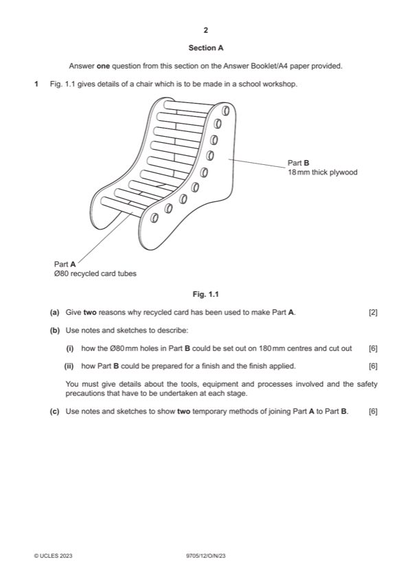

Question 1

Original paper page 2
Part 1(a) — solution
Exemplar answers: 2 AOVR include:
Environmentally friendly so creates a good image for the • easy to cut to shape
manufacturer [1]
Relatively cheap to buy and readily available [1]
0–2
Mark points
- Include the ideas shown in the solution above.
Part 1(b)(i) — solution
Sketches and/or notes show: 6 Accept hand and CAD/CAM methods.
Set out on 180 mm centres and cutting out the hole
Suitable method [0–3] e.g. marking out, templates
Tools, equipment or processes
Suitable method [0–2] e.g. pencil, rule, hole saw.
Safety precaution [0–1]
0–6
Mark points
- Include the ideas shown in the solution above.
Part 1(b)(ii) — solution
Prepared and application of a finish 6 Accept hand and CAD/CAM methods.
Suitable method [0–3] e.g. edges cleaned up, surfaces
sanded, sealed
Tools, equipment or processes
Suitable finish [0–2] e.g. glasspaper, varnish, paint
Safety precaution [0–1]
0–6
Mark points
- Include the ideas shown in the solution above.
Part 1(c) — solution
Sketches and/or notes show: 6 Friction fit, screw mechanisms, end cap that pushed into the
Temporary methods of joining Part A to Part B tube, extend the tube and push a rod through.
Suitable method and description [0–3] 2
e.g. screw mechanisms using an insert
0–6
2023 Page 4 of 17
9705/12 Cambridge International AS & A Level – Mark Scheme October/November 2023
Guidance
Mark points
- Include the ideas shown in the solution above.